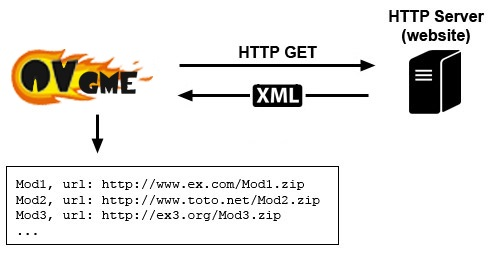

Pour OvGME Afterburner, un dépot est simplement un serveur web (HTTP) qui
fournit des données XML spécifiquement structurées avec des informations à
propos de mod(s) à télécharger. Il y'a deux choses à ne pas confondre: Le
serveur de dépot, et où les mod(s).
sont téléchargeables.
Transaction de dépot
Le mécanisme de dépot OvGME Afterburner est assez simple: Un serveur web
héberge un fichier XML disponible comme n'importe quelle autre page web à
partir d'une adresse spécifiqOvGME AfterburnervGME va interroger le serveur
HTTP pour recevoir ce fichier spécifique, puis va l'analyser pour recueillir
les données à propos des mods disponibles et où ils peuvent être
téléchargés.

Le serveur de dépot
Le serveur de dépot doit être un serveur HTTP 1.1 standard. C'est pour ainsi
dire principalement le seule standard qui est actuellement en service sur le
web. En d'autres termes, un serveur de dépot n'est rien d'autre qu'un site
web qui fournit un fichier XML compatible OvGME Afterburner. La seule règle
étant qu'OvGME Afterburner doit pouvoir accéder à ce fichier XML via le web
avec une URL spécifique.
Pour résumer: Si vous pouvez ouvrir le fichier XML depuis votre navigateur
web favoris, OvGME Afterburner le pourra également, et donc, il s'agit d'un
"d'OvGME Afterburner".
L'URL standard à fournir
Si vous fournissez un fichier XML classique sur votre serveur, l'URL de
dépot à fournir aux utilisateurs doit être l'URL complète vers ce fichier
XML, avec ou sans le ".xml" à la fin de l'URL. En effet, si il n'y a
pas de ".xml" à la fin de l'URL, OvGME Afterburner va automatiquement
le rajouter.
Par exemple, si l'URL complète pour fichier XML est:
"http://www.example.com:8080/repository/game1.xml"
L'URL suivante est également valide pouOvGME AfterburnerME:
"http://www.example.com:8080/repository/game1"
OvGME Afterburner prend en charge tout format d'URL standard, avec ou sans
protocole ou port spécifié.
Voici des exemples de format d'URL pris en charge:
http://www.example.com/folder/repository
www.example.com/folder/repository
www.example.com:8081/folder/repository
http://www.example.com:8081/folder/repository
Note: si aucun port n'est spécifié, le port HTTP 80 par défaut est
utilisé.
données XML générées dynamiquement
OvGME Afterburner prend en charge la méthode d'encodage de transfert chunked
pour de simples requêtes HTTP GET (pas pour le téléchargement de fichier).
En d'autres termes
OvGME Afterburner peut recueillir des données XML depuis une page web
générée dynamiquement comme une page PHP ou ASP.
Cependant, dans ce cas, l'URL founit doit permettre à OvGME AfterburnerE de
reconnaitre qu'il ne s'agit pas d'un dépot XML brute (pour ne pas essayer
d'ajouter l'extension ".xml" à l'URL). Pour se faire, l'URL doit au
choix:
-
Etre l'URL complète vers le fichier, incluant l'extension ".php",
".asp" ou ".aspx".
-
Contenir le caractère "?", typique d'une URL de requête
dynamique.
Voici quelques exemples d'URL valides pour un dépot généré dynamiquement:
http://www.example.com/repository.php
http://www.example.com/repo.asp
http://www.example.com?game=1&type=2
La génération dynamique de données XML permet aux gestionnaires de dépéts de
créer leur dépôts en utilisant une vraie base de donnée avec leur propre
générateur de source XML.